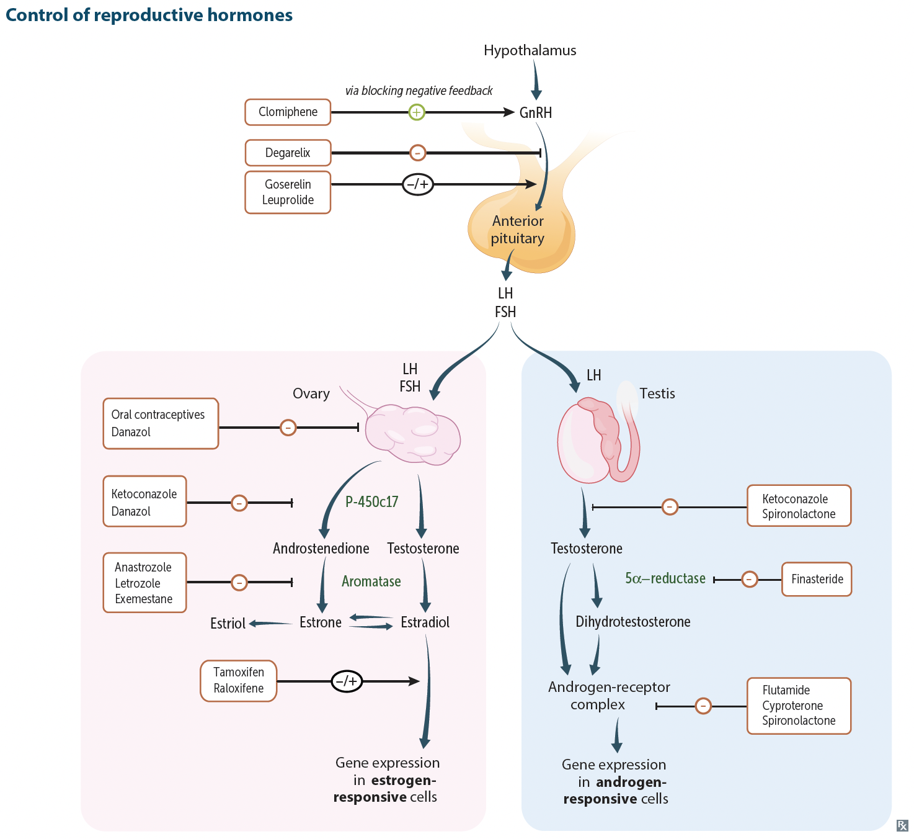

| Mechanism of Action | GnRH analogs.
|
| Clinical Use | Pulsatile administration: Infertility. Continuous administration: Uterine fibrosis, endometriosis, precocious puberty, prostate cancer. |
| Adverse Effects | Hypogonadism, ↓ libido, ED, N/V, headache, menopausal symptoms (e.g., hot flashes, bone density loss) |
| Degarelix | Ganirelix, cetrorelix | |
| Mechanism of Action | Competitive inhibition of GnRH receptor in the pituitary, ↓ release of FSH/LH | |
| Clinical Use | Prostate cancer | Control of ovulation via suppression of premature LH surge in IVF cycles, endometriosis, menorrhagia, gynecomastia. |
| Adverse Effects | Hot flashes, hepatotoxicity. | Virilization in female, GI disturbances, weight gain, fluid retention, dizziness, muscle cramps, headache. |
| Mechanism of Action | Produces local inflammatory reaction toxic to sperm and ova, preventing fertilization and implantation
|
| Clinical Use | Long-acting reversible contraception. Most effective emergency contraception (up to 120 hrs/5 days following unprotected intercourse)
|
| Contraindications | Active pelvic infection, pregnancy or suspected pregnancy, distorted uterine cavity, undx'd uterine bleeding, malignancy of genital tract, allergy to component (or Wilson's dz) |
| Adverse Effects | Heavier or longer menses, dysmenorrhea. Risk of PID with insertion |
| Mechanism of Action | Releases 5-20 mcg/day, primarily local effects
|
| Clinical Use | Long-acting reversible contraception.
|
| Contraindications | Active pelvic infection, pregnancy or suspected pregnancy, distorted uterine cavity, undx'd uterine bleeding, malignancy of genital tract |
| Adverse Effects | Heavy menses |
| Mechanism of Action | Releases 20-60 mcg/day; suppresses ovulation, thicken cervical mucus, alters endometrium No estrogen |
| Clinical Use | Long-acting reversible contraception.
|
| Contraindications | same as other progestin-only methods (see below) |
| Adverse Effects | Menstrual irregularities |
| Mechanism of Action |
|
| Clinical Use | Long-acting reversible contraception. |
| Contraindications | smokers > 35 y/o, pts with ↑ risk of CV dz, migrane (esp. w/ aura), breast cancer, liver cancer |
| Adverse Effects | breakthrough menstrual bleeding, breast tenderness, VTE, hepatic adenomas |
See progestins class drug below
| Mechanism of Action | Bind oxytocin receptor, stimulating the release of intracellular Ca2+ and inducing contraction of smooth muscle in uterus and mammary myoepithelial cells |
| Clinical Use | Induction of labor, postpartum hemorrhage, stimulation of milk letdown. |
| Adverse Effects | Generally well tolerated. |
| Mechanism of Action | Known to bind α‑adrenergic, dopaminergic, and serotonin (5‑HT2) receptors. Stimulates contraction of uterus and smooth muscle, those exact receptor(s) responsible for uterotonic effects is unknown. |
| Clinical Use | Postpartum hemorrhage |
| Adverse Effects | Generally well tolerated. |
| Mechanism of Action | Increase intracellular Ca2+ inducing contraction |
| Clinical Use | Cervical ripening, induction of labor. Misoprostol (± mifepristone): missed abortion to remove fetal material
|
| Contraindications | Pregnant women Sensitivity to prostaglandins |
| Adverse Effects | Diarrhea, abd pain |
| Terbutaline, ritodrine, salmeterol (β‑adrenergic agonist) |
Nifedipine (Ca2+ channel blocker) |
Indomethacin (NSAID) |
|
| Mechanism of Action | Inhibits phosphorylation of MLCK, decreasing contractility | Decrease Ca2+ influx, decreasing smooth muscle contraction | Inhibits prostaglandin effect, leading to decreased contractility |
| Clinical Use | Used to ↓ contraction frequency in preterm labor and allow time for administration of steroids (to promote fetal lung maturity) or to transfer to appropriate medical center with obsterical care. | ||
| Adverse Effects | Pulmonary edema, tremor, arrhythmia | ||
| Mechanism of Action | Synthetic lysine derivative that binds lysine bleeding sites of plasminogen → inhibits fibrin binding to plasminogen, resulting in preservation and stabilization of fibrin matrix |
| Clinical Use | Prevention of bleeding in hemophilia patients undergoing dental procedures Prevention of bleeding in anticoagulated patients undergoing dental procedures Heavy menstrual bleeding Postpartum hemorrhage Acute trauma Intracranial hemorrhage following administration of thrombolytic agents Long-term prophylaxis of hereditary angioedema Surgical indications Epistaxis Hemoptysis GI bleeding |
| Contraindications | |
| Adverse Effects |
| Mechanism of Action | Estrogen receptor agonists, resulting in stimulation of endometrial growth and development/maintenance of 2° sex characteristics |
| Clinical Use | Hormone replacement therapy in women w/o hx of breast cancer (for relief and prevention of menopausal sx: hot flashes, vaginal atrophy, etc.) Osteoporosis (↑ estrogen, ↓ osteoclast activity) Contraception |
| Contraindications | ER ⊕︀ breast cx, history of DVTs, tobacco use in F > 35YO |
| Adverse Effects | ↑ risk of endometrial cancer, bleeding in postmenopausal women, thrombosis, weight gain, breast tenderness, migraine DES: ↑ risk of clear cell vaginal adenocarcinoma in female fetus |
| Notes | Unopposed estrogen therapy → endometrial cx ⇒ Add progesterone/progestins. |
| Mechanism of Action | Binds progesterone receptors; ↓ growth and ↑ vascularization of endometrium, thicken cervical mucus, maintenance of pregnancy |
| Clinical Use | Contraception Endometreial cancer, abnormal uterine bleeding |
| Contraindications | Current breast cancer, known or suspected pregnancy, VTE, liver tumors, active liver dz, undiagnosed abnormal genital bleeding, known sensitivity to progestin |
| Adverse Effects | Hypoestrogenism, Thrombosis, HTN, fluid retention, ↑ appetite & weight, depression, decreased libido, breast discomfort, irregular periods, breast tenderness, acne (only w/o estrogen) DMPA: loss of bone mineral density, teratogenesis |
| Mechanism of Action | Synthetic androgen that acts as a partial agonist at androgen and progesterone receptors and displaces testosterone from sex hormone binding globulins, resulting in ↑ serum testosterone level |
| Clinical Use | Endometriosis (b/c it ↓ estrogen levels but largely replaced by other therapies d/t to hyperadrogenic fx) Hereditary angioedema |
| Adverse Effects | Masculinization, hirsutism, acne, ↓ HDL levels, weight gain, edema, hepatotoxicity, idiopathic intracranial HTN |
| Mechanism of Action | Estrogen receptor antagonist in hypothalamus. Prevents normal feedback inhibition and ↑ LH and FSH from pituitary, which stimulates ovulation. |
| Clinical Use | Infertility due to anovulation (e.g., PCOS) |
| Adverse Effects | Hot flashes, ovarian enlargement, multiple simultaneous pregnancies, breast tenderness, abd pain, visual disturbances |
| Mechanism of Action | Estrogen receptor antagonist in breast tissue. Agonist in endometrium and bone |
| Clinical Use | Treat and prevent recurrence of ER/PR ⊕︀ breast cancer, osteoporosis |
| Adverse Effects | Endometrial cancer, thrombosis, hot flashes |
| Mechanism of Action | Estrogen antagonists in breast and endometrium. Agonist in bone. |
| Clinical Use | Osteoporosis |
| Adverse Effects | Thrombosis, hot flashes |
| Mechanism of Action | Competitive (anatrozole) and noncompetitive/irreversible (exemestane) inhibition of peripheral conversion of androgens to estrogen |
| Clinical Use | ER ⊕︀ breast cancer in postmenupausal women |
| Adverse Effects | Osteoporosis, infertility |
| Mechanism of Action | Competitive inhibitors of progestins at progesterone receptors |
| Clinical Use | Termination of pregnancy (mifepristone). Emergency contraception (ulipristal). |
| Adverse Effects | Heavy bleeding, abd pain, GI upset |
| Mechanism of Action | Both: Inhibit 17,20 desmolase/17α‑hydroxylase, resutling in increased estradiol to testosterone ratio Spironolactone: Displaces estradiol and DHT from sex hormone binding proteins |
| Clinical Use | PCOS |
| Adverse Effects | Gynecomastia, amenorrhea, hepatotoxicity |
| Mechanism of Action | Inhibits HER2/neu receptor, causing selective immune-modulated cytotoxicity |
| Clinical Use | HER2/neu ⊕︀ breast cancer |
| Adverse Effects | Cardiotoxicity |
| Mechanism of Action | Agonists at androgen receptors, resulting in ↓ release of LH form the anterior pituitary |
| Clinical Use | Hypogonadism/testicular failure, promote development of 2° sex characteristics Anemia Stimulation of anabolic activity to promote recovery after burn or injury |
| Adverse Effects | Masculinization in females (virilization), ↓ intratesticular testosterone in male by inhibiting release of LH (via negative feedback) → gonadal atrophy. GI disturbances, weight gain, fluid retention, dizziness, muscle cramps, headache. Premature closure of epiphyseal plates. ↑ LDL, ↓ HDL. |
| Mechanism of Action | Nonsteroidal competitive inhibitors at androgen receptors. |
| Clinical Use | Prostate cancer, hirsuitism in women. |
| Adverse Effects | Gynecomastia, impotence, decreased libido, decreased volume of ejaculate, hot flashes, diarrhea, nausea, hepatitis |
| Mechanism of Action | Decrease conversion of testosterone to the more potent DHT. |
| Clinical Use | BPH, androgenic alopecia. |
| Contraindications | Pregnant women should avoid exposure d/t risk of hypospadias in male fetus. |
| Adverse Effects | Gynecomastia, sexual dysfunction, testicular pain, GI distress. |
| Mechanism of Action | Inhibition of cGMP phosphodiesterase → ↓ hydrolysis of cGMP → ↑ cGMP → ↑ smooth muscle relaxation by enhancing NO acitivity ⇒ pulmonary vasodilation and ↑ blood floow in corpus cavernosum |
| Clinical Use | ED, pulmonary HTN, BPH (tadalafil) |
| Adverse Effects | Life-threatening hypotension in pts taking nitrates, headache, changes in blude-green color vision, flushing, dyspepsia |
| Mechanism of Action | Selective α1A,D antagonist, inhibits smooth muscle contraction in the prostate |
| Clinical Use | BPH |
| Adverse Effects | Retrograde ejaculation, hypotension, poor outcomes for cataract sugery |
| Mechanism of Action | Direct arteriolar vasodilator |
| Clinical Use | Androgen alopecia, severe refractory HTN |
| Adverse Effects | Local irriation/burning, unwanted hair growth |